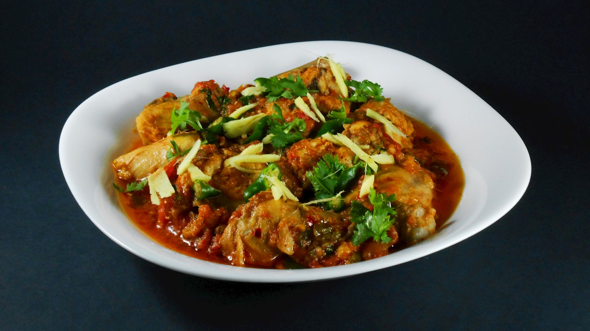

Home
Chicken Karahi

Description
Chicken karahi is a poultry dish that is popular in Pakistan and North India. The word karahi in its name refers to a thick and deep cooking-pot similar to a wok in which the dish is prepared. Apart from chicken, the dish is made with red chili powder, cumin, garam masala, ginger, allspice, cardamom, tomatoes, and garlic. When prepared with mutton, the dish is known as gosht karahi. It is traditionally served with rice, roti, or naan.
Ingredients
- 1 kg chicken (bone-in, cut into small pieces)
- 5 to 8 large tomatoes
- 4 to 6 fresh green chilies
- 2 tablespoons ginger-garlic paste
- 1/2 cup cooking oil or ghee
- 2 tablespoons fresh ginger (sliced into thin strips)
- 1/2 cup fresh coriander leaves
- 1 teaspoon salt
- 1 teaspoon red chili powder or flakes
- 1 teaspoon cumin powder
- 1 teaspoon coriander powder
- 1/2 teaspoon black pepper powder
- 1/2 teaspoon garam masala powder
- 1/2 cup yogurt (optional)
Steps
- Pour 1/2 cup of cooking oil or ghee into your karahi or deep skillet over medium-high heat.
- Add the 1 kg of chicken pieces and 1 teaspoon of salt. Fry for 5 to 7 minutes until the chicken changes colour to a light golden brown.
- Stir in the 2 tablespoons of ginger-garlic paste. Sauté for another 2 minutes until fragrant.
- Cut the 5 to 8 large tomatoes in half and place them directly over the chicken, skin-side up.
- Cover the pan with a lid and turn the heat to medium. Let it cook for 5 to 6 minutes until the tomatoes soften. Remove the lid and use tongs to easily peel off and discard the tomato skins.
- Use your cooking spoon to mash the softened tomatoes directly into the pan, mixing them thoroughly with the chicken.
- Turn the heat up to high. Stir in 1 teaspoon red chili powder, 1 teaspoon cumin powder, and 1 teaspoon coriander powder.
- Continuous stir-fry (bhunno) the mixture on high heat for 8 to 10 minutes. The water from the tomatoes should evaporate, leaving a thick gravy where the oil starts to separate and rise to the top.
- If you are using the 1/2 cup of yogurt, lower the heat, whisk the yogurt smoothly, and stir it in now. Turn the heat back to high and cook for another 3 to 4 minutes until the oil separates again.
- Stir in 4 to 6 fresh green chilies (slit down the middle) and 1/2 teaspoon of black pepper powder. Cook for 2 more minutes
- Turn off the heat. Sprinkle 1/2 teaspoon of garam masala powder over the dish. Garnish generously with the 2 tablespoons of thinly sliced fresh ginger strips and 1/2 cup of fresh coriander leaves. Cover and let it sit for 2 minutes before serving.